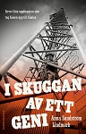

Anna Maria Helena Sundström Lindmark
Journalist, författare, föreläsare.
| Född: | 1975-09-05 Skellefteå, Skellefteå lfs, Skellefteå kn. [1] |
|---|
| Levde: | 1981 Sparren 7, Ramv 15, Umeå, Ålidhems fs, Umeå kn. [1] |
|---|
| Levde: | 1991 Sparren 7, Ramv 15, Umeå, Ålidhems fs, Umeå kn. [2] |
|---|
Noteringar
I SKUGGAN AV ETT GENI, 2017-08
Det här är berättelsen om Alvar Lindmark, den fattige och djupt religiöse bondsonen från Burträsk utanför Skellefteå som uppfann hissen som skulle nå till Gud. Han grundade det internationella storföretaget Alimak, blev Skellefteås excentriske miljonär som älskade amerikanska bilar och stora kyrkorglar. Men Alvar förlorade det han byggt upp och sorgen och frågorna levde kvar i generationer.
Författare: Anna Sundström Lindmark
VI SKULLE SEGLA RUNT JORDEN
En 2:a bok kommer ut 2018-09
Författare: Anna Sundström Lindmark
OM MIG
Jag heter Anna Sundström Lindmark och verkar som journalist, författare och muntlig berättare. I nästan hela mitt liv har jag skrivit – ja faktiskt redan innan jag lärde mig skriva använde jag påhittade låtsasbokstäver. Driften att förmedla mig genom olika konstnärliga uttryck kom tidigt. Jag var ett känsligt barn som kände att mycket i livet var konstigt och svårt så jag behövde sortera intryck, tankar och känslor och gestalta dem genom ord, bild, teater eller musik. Nu som vuxen ligger fortfarande samma orsak som grund för mitt skrivande. Utan utrymme att skapa kan jag inte existera.
Efter åtta år som anställd reporter och redaktör på tidning blev min längtan att skapa något eget för stor och jag startade eget företag. Som företagare strävar jag efter att maximera kreativitet, effektivitet och meningsfullhet.
Jag vill få så mycket tid och inspiration som möjligt att skriva, berätta och hjälpa andra att göra det.
FAKTA
Född: 1975
Bor: I Umeå och i Sikeå.
Familj: Man, barn och hund
Styrkor: Se möjligheter, tänka nytt, omvärdera
Svagheter: Dålig på att prata om väder och vind. Jag blir så rastlös då.
Blir arg av: Fördomar, maktmissbruk
Blir glad av: Häftiga idéer. Människor som formar sina egna liv
Äter: Vegetariskt
Dricker: För mycket kaffe
Tror på: Människans rätt att vara hel – full av nyanser och komplexitet. Och att skrivandet att läsandet är ett helande verktyg
MERITER
ARBETEN (I URVAL)
Tidskriften Provins Nr. 3/2016. Essä: Att göra litteratur av verkligheten
Umeå Tidning, krönikör varannan vecka År 2013 – 2016
Kreator, skribent (2013)
Intellecta Coorporate, skribent (2013)
Västerbottens Mellanbygd, reporter, fotograf och redaktör (2010-01-04 – 2011-09-04)
Vertex, studenttidning, reporter, fotograf, webbreporter (2005-08 01– 2010-01-01)
Norra Västerbotten, reporter, familjeredaktör, redigerare, taltidning (2004-08-01 –2005-03-01)
UTBILDNING
Umeå universitet :
Vetenskapsjournalistik 80 p
Drama teater film 20 p,
Skapande Svenska 30 hp
Uppsala universitet:
Litteraturvetenskap 60 p
Praktisk filosofi 40 p,
Tillämpade kulturstudier 20 p
UTMÄRKELSER
Konstnärsnämndens projektbidrag 2016 för bilderboksprojektet “Det skiftar i grått” – ett samarbete med konstnären Elisabeth Widmark.
Målinriktat kulturstipendium (10 000 kr) Robertsfors kommun, 2014
Berättarkraft (finalist i tävlingen) år 2014. Tema hemligheter och lögner
***************************************************************************************************
“Att Anna Sundström Lindmark redan är en driven författare vittnar hennes bok I skuggan av ett geni om. Jag kan dessutom intyga att hon är en minst lika duktig berättare. Med nära publikkontakt och stor inlevelse framför hon växelvis sina muntliga personporträtt, varvade med reflektioner och händelser ur sitt eget liv. “
Christina Ohlsson, arrangör för Nävarnas hus berättarcafé
“Anna var fantastiskt bra som talare i samband med vårt 65-års jubileum, jag och alla andra blev mycket fascinerad av hennes framförande.”
Rolf Persson, VD Alimak
“Vårt bibliotek har bokat Anna Sundström Lindmark som föreläsare vid ett par tillfällen. Anna är en mycket duktig berättare och har en genomtänkt och tydlig struktur i sina föredrag. Det har varit underhållande och intressant. Vi har också fått positiv respons från publiken.”
Åsa Grenholm, bibliotekschef i Robertsfors kommun
“En mycket trevlig kväll med den där “förnöjsamma” Anna. Efteråt kunde man ta sig en funderare på “Geniet”, vem var det egentligen? Alvar eller Anna??”
Marianne och Gunnar Hedman, Skellefteortens Hushållningsgille
“Jag tycker att Anna som talare är otroligt fängslande och fascinerande. Hon har en förmåga att fånga lyssnarna på ett ”speciellt” sätt. Jag skulle kunna lyssna på henne hur många gånger som helst.”
Ulla Edler, Connect Norr
Personhistoria
| Årtal | Ålder | Händelse |
|---|
| 1975 |
|
Födelse 1975-09-05 Skellefteå, Skellefteå lfs, Skellefteå kn [1] |
| 1977 |
1 år |
Systern Ida Sara Kristina Lindmark föds 1977-09-04 Umeå, Ålidhems fs, Umeå kn [1] |
| 1981 |
|
Levde 1981 Sparren 7, Ramv 15, Umeå, Ålidhems fs, Umeå kn [1] |
| 1981 |
5 år |
Systern Emmy Lisa Josefin Lindmark föds 1981-03-11 Sparren 7, Ramv 15, Umeå, Ålidhems fs, Umeå kn [2] |
| 1988 |
12 år |
Brodern Isak Tomas Peter Lindmark föds 1988-04-11 Sparren 7, Ramv 15, Umeå, Ålidhems fs, Umeå kn [2] |
| 1991 |
|
Levde 1991 Sparren 7, Ramv 15, Umeå, Ålidhems fs, Umeå kn [2] |
| 1995 |
19 år |
Fadern Thomas Peter Lindmark dör 1995-06-09 Kungsg 98, Umeå, Umeå sfs, Umeå kn [3] |
Dokument
Källor
| [1] | Mtl Västerbottens län 1981 |
| |
| | |
| [2] | Mantalslängd 1991, Västerbottens län |
| |
| | |
| [3] | RTB 95 / SPAR 92f / SPAR 95 |
| |
|
|
| www.annasundstromlindmark.se |
| |
|  |
2017-08. BOKEN OM ALVAR
Det här är berättelsen om Alvar Lindmark, den fattige och djupt religiöse bondsonen från Burträsk utanför Skellefteå som uppfann hissen som skulle nå till Gud. Han grundade det internationella storföretaget Alimak, blev Skellefteås excentriske miljonär som älskade amerikanska bilar och stora kyrkorglar. Men Alvar förlorade det han byggt upp.
I skuggan av ett geni, är en annorlunda bok om framgång. Det är en berättelse om den sköra tråden mellan geni och galenskap, rikedom och fattigdom och om nödvändigheten av fasader och yta i en värld där människor så ofta dömer den som går mot strömmen. Dessutom är också ett barnbarns kamp med en bok och ett bitvis smärtsamt möte med sin egen historia och sig själv.
ISBN: 9789198263763
Antal sidor: 432
Förlag:
North Chapter AB
www.adlibris.com/se/bok/i-skuggan-av-ett-geni-arvet-fran-uppfinnaren-som-tog-hissen-upp-till-himlen-9789198263763
|
| |
 |
2018-09. Vi skulle segla runt jorden.
ISBN: 9789127156494
|
|

{kind=link}
{kind=link}